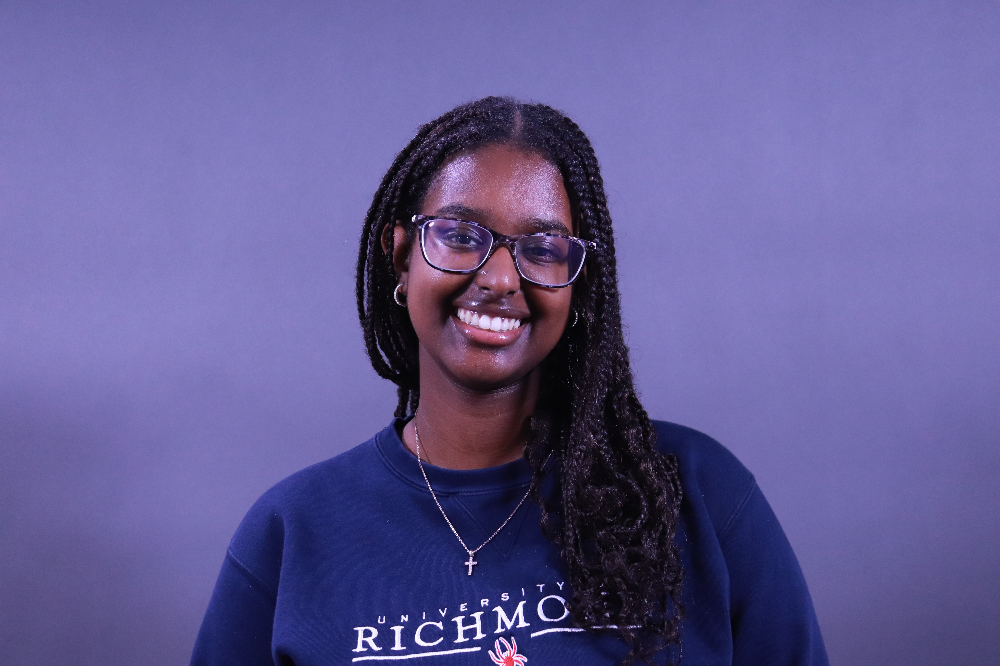
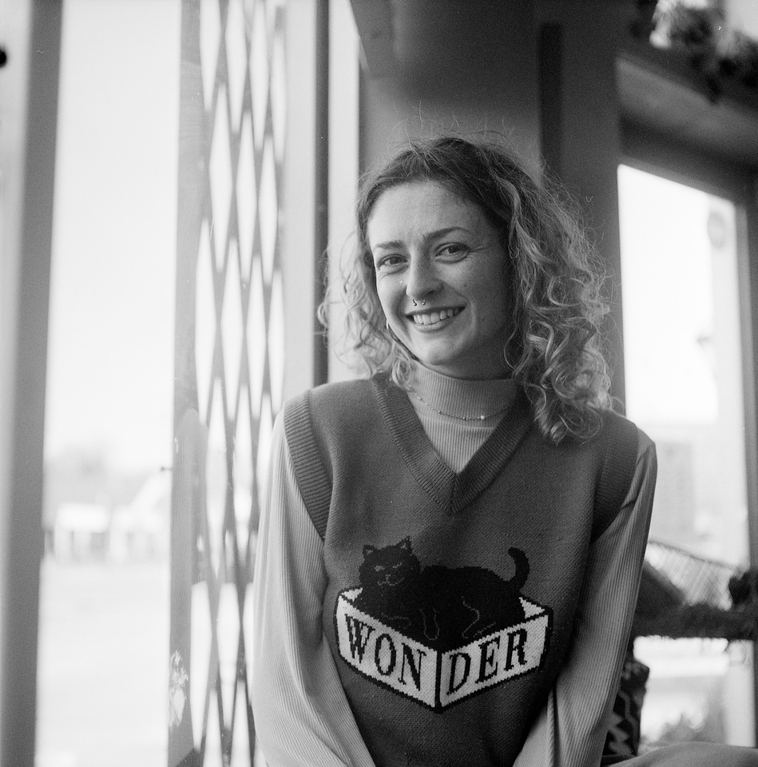

Meet the Coordinator
Mary Finley-Brook is a Professor of Geography at the University of Richmond, where she has taught since 2006. Finley-Brook has decades of experience conducting participatory action research and collaborates regularly with community-based organizations and frontline populations researching data centers in the greater Richmond area.
She is a 2026-2027 fellow with the Halt the Harm Network’s Stop Bad Data Centers Campaign. Finley-Brook was a fellow with University of Richmond’s Center for AI and Liberal Arts from 2025-2026.
She is invited to speak regularly on topics including the energy sector, AI and data centers.
Email her at: mbrook@richmond.edu.
Meet the Team

Beth Zizzamia
Operations Manager for the Spatial Analysis Lab.
Beth serves as a technical lead for this project creating and
sharing geospatial products like maps and map enabled tools.
Learn more about her here:
Beth's Profile

Meklet Berihun
Web Developer
Meklet is a Computer Science student at the University of Richmond who supports the eAIrth project’s website development and maintenance.
She focuses on improving website accessibility and display of research and project resources.
Keep up with her work on LinkedIn.
Ryan Cales
Assistant Director of Technology in Teaching, Faculty Hub
Ryan supports faculty in AI literacy and writing pedagogy, with a
particular interest in AI's impacts on learning and labor.
Learn more about Ryan here:
Ryan's Profile

Moe Buggs
Community Advisor
Moe is a researcher with a focus on insects, environmental science, and education.
Currently researching the state of data center buildout in the Richmond area.
Email her at: insectsmatter@gmail.com